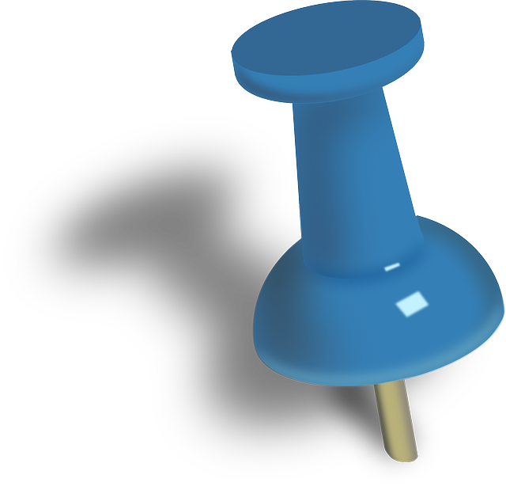
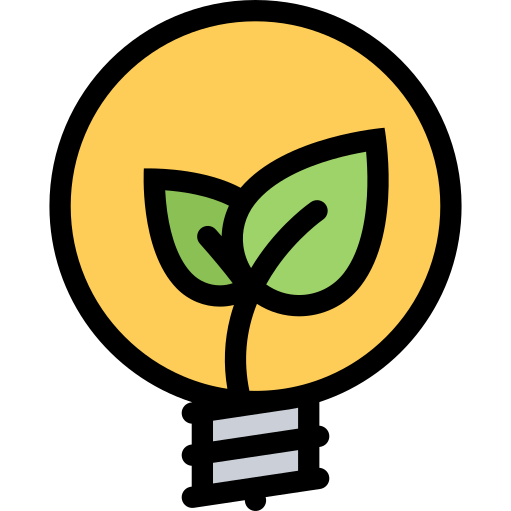
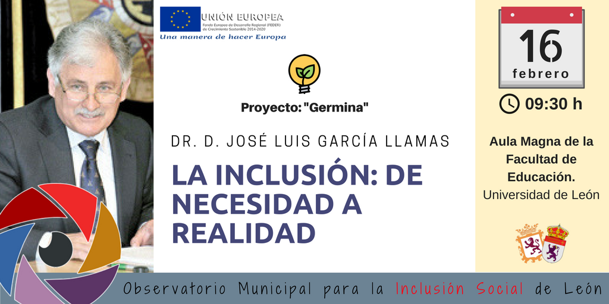
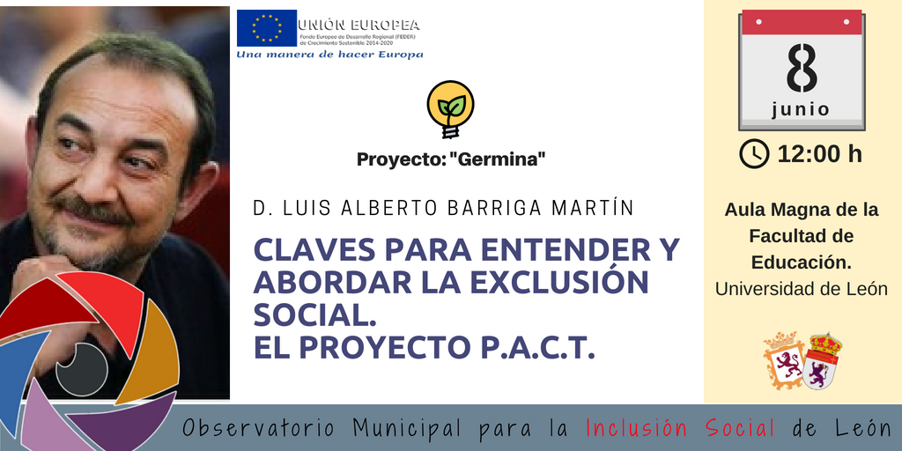
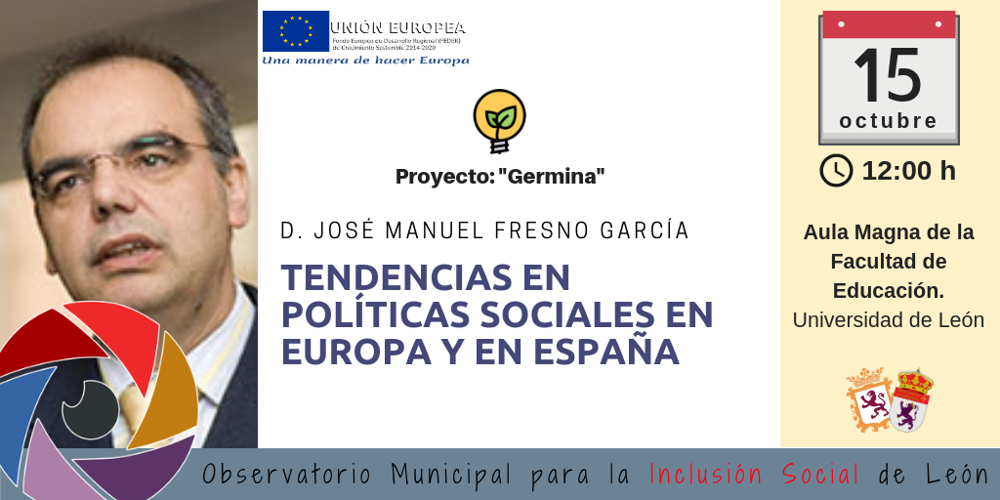
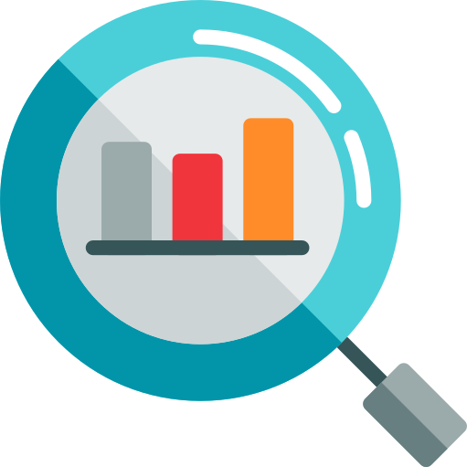
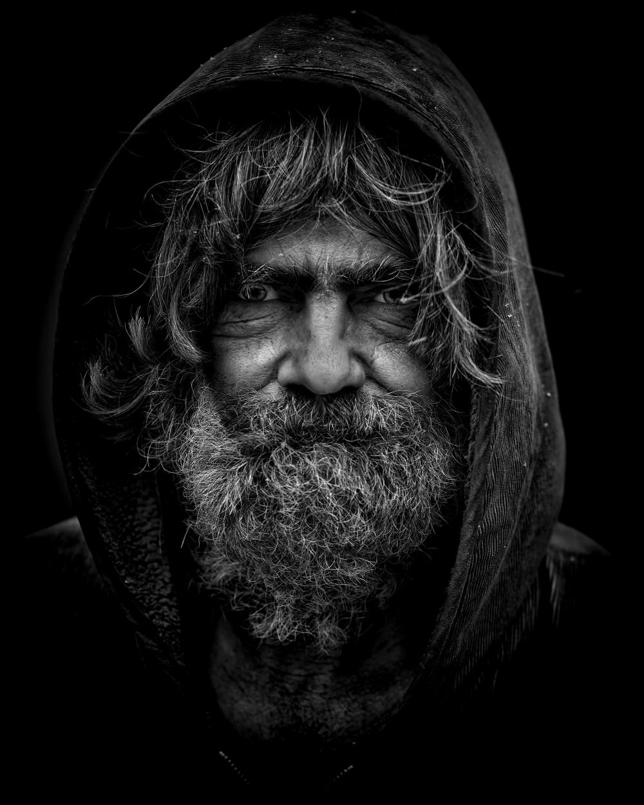

Esta iniciativa se enmarca en la activa cooperación que desde hace años mantienen el Ayuntamiento de León y la Universidad de León en múltiples ámbitos al amparo del Convenio Marco y de los convenios específicos que se han suscrito entre ambas entidades.
En concreto surge de la colaboración estable durante los últimos años entre la Facultad de Educación de la Universidad de León con los Equipos de Inclusión Social (EDIS) del Ayuntamiento de León en el desarrollo y supervisión del Prácticum en el Grado en Educación Social así como en otras acciones puntuales.

El Observatorio para la Inclusión Social se concibe como un espacio común de trabajo de carácter técnico, académico e innovador para la reflexión y análisis sistemático de la realidad del complejo fenómeno de la inclusión/exclusión social en la ciudad de León, desde una perspectiva amplia y una proyección eminentemente práctica.
Fisiólogo y Bioquímico, Hungría.
Premio Nobel en 1937La creación del Observatorio pivota sobre tres ideas que servirán como los ejes respecto a los cuales se desarrollarán las acciones del mismo.
Modelos válidos de observación y análisis de la realidad social.
Incorporación de las Nuevas Tecnologías a la Acción Social.
Propuestas innovadoras en la investigación, diseño, planificación, gestión, implementación, instrumentos, estrategias, evaluación...
Promoción de las Buenas Prácticas en Intervención Social
Entornos compartidos de reflexión y análisis sobre la Inclusión/Exclusión Social.
Espacios y acciones de colaboración y coordinación(Administraciónes-Universidad-Tercer Sector-Sector Privado)
Sistemas estables de participación y Observación Cooperativa.
Publicación rigurosa de información relacionada con el objeto del observatorio y de los resultados obtenidos de las acciones del mismo (online/físico)
Acciones complementarias a la formación académica y de capacitación técnica.
Compilación y sistematización de información, recursos y materiales técnicos sobre la inclusión/exclusión social
Incorporación de las redes sociales y de las TICs para transmitir la información.
El funcionamiento ordinario del Observatorio se organizará mediante proyectos. Cada uno de ellos, si bien debe responder a los objetivos generales del observatorio, tendrá un desarrollo programático independiente. Este planteamiento modular permitirá rentabilizar los recursos de los que se disponen, definiendo cada acción con su propio equipo de trabajo, una implementación independiente, una temporalización propia y un desarrollo presupuestario ajustado a cada proyecto.
"Germina"
(Serie de seminarios)
Serie de seminarios sobre Investigación de la Exclusión Social

Los procesos de reflexión y construcción de ideas permiten contrastar las ideas propias expuestas con las de otros y revisar, al mismo tiempo, su coherencia y lógica, cuestionando su adecuación para explicar los fenómenos ("Nuevas tecnologías y aprendizaje significativo de las ciencias".Romero y Quesada, 2014).
Serie de al menos tres Seminarios de carácter técnico con ponentes considerados referentes en su campo. Cada seminario se articulará según la siguiente estructura:
Ponencia pública sobre el tema de su especialidad.
Asesoramiento en Grupo de Trabajo para el diseño y puesta en marcha del observatorio o de alguno de los proyectos.
Unificar conceptos, estrategias y criterios técnicos entre las personas implicadas en la puesta en marcha del observatorio.
Ofrecer acceso a formación especializada de calidad sobre temas relacionados con Investigación Social y Exclusión/Inclusión.
Conformar la base científica y técnica para la puesta en marcha del Observatorio.
Enero 2018 - Diciembre 2018
"observale.es"
Espacio común online para el intercambio de información, ideas, proyectos, eventos y publicaciones relacionados con el objeto y el trabajo del Observatorio.
"M.A.T.I.C.E.S."
Modelo de Análisis Técnico e Investigación Científica de la Exclusión Social.




Productos del Proyecto "MATICES"


Revista Ciencia Política, Buenos Aires 2008
Escritor y Arquitecto, Uruguay
